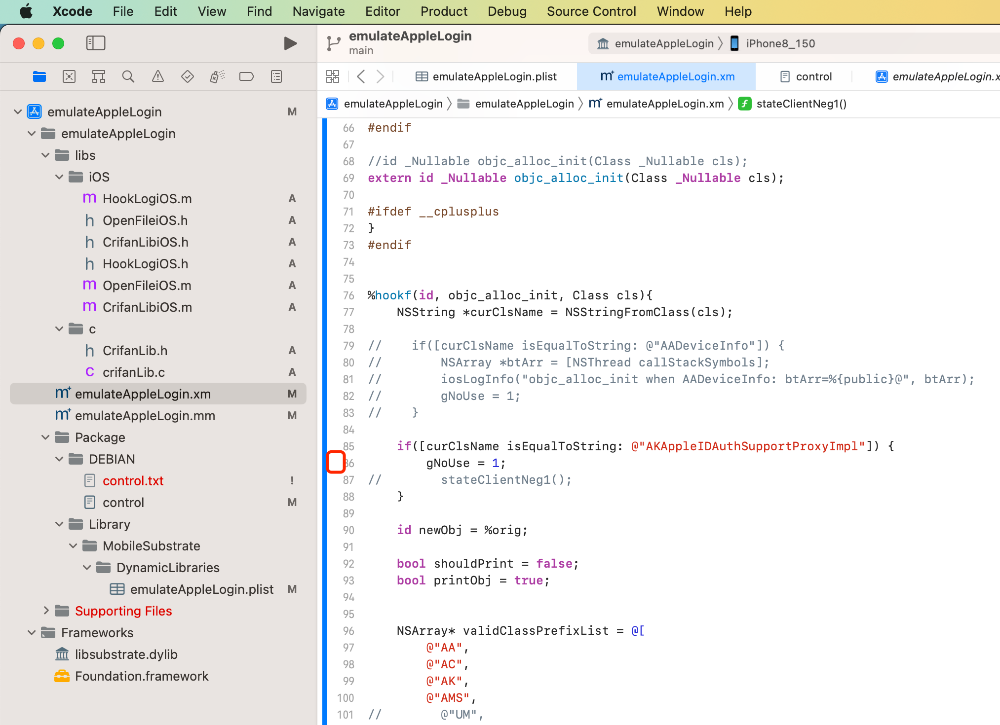

NSStringFromClass
应用举例
CDLCUnknown
Source/CDLoadCommand.m
+ (id)loadCommandWithDataCursor:(CDMachOFileDataCursor *)cursor;
{
Class targetClass = [CDLCUnknown class];
//NSLog(@"targetClass: %@", NSStringFromClass(targetClass));
AppDelegate
main.m
#import <UIKit/UIKit.h>
#import "AppDelegate.h"
#import "CrifanLib.h"
int main(int argc, char * argv[]) {
// anti-debug
iOS_antiDebug_ptrace();
NSString * appDelegateClassName;
@autoreleasepool {
// Setup code that might create autoreleased objects goes here.
appDelegateClassName = NSStringFromClass([AppDelegate class]);
}
return UIApplicationMain(argc, argv, nil, appDelegateClassName);
}
objc_alloc_init
%hookf(id, objc_alloc_init, Class cls){
NSString *curClsName = NSStringFromClass(cls);
if([curClsName isEqualToString: @"AKAppleIDAuthSupportProxyImpl"]) {
gNoUse = 1;
stateClientNeg1();
}
